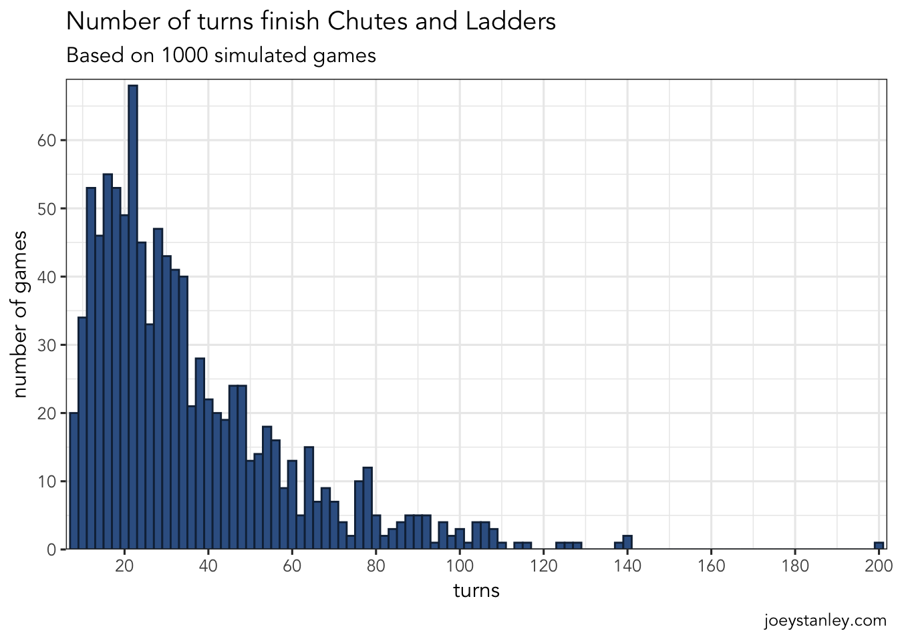
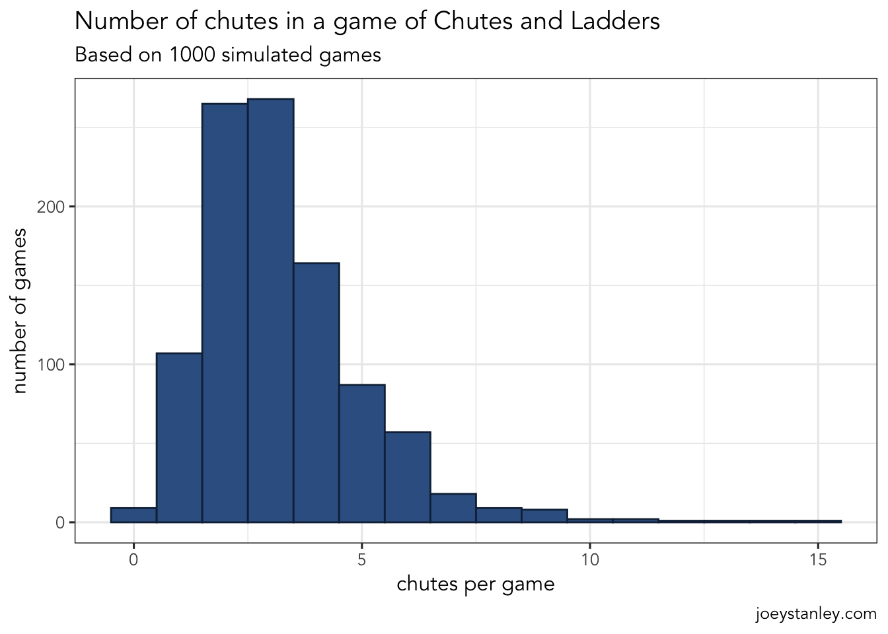
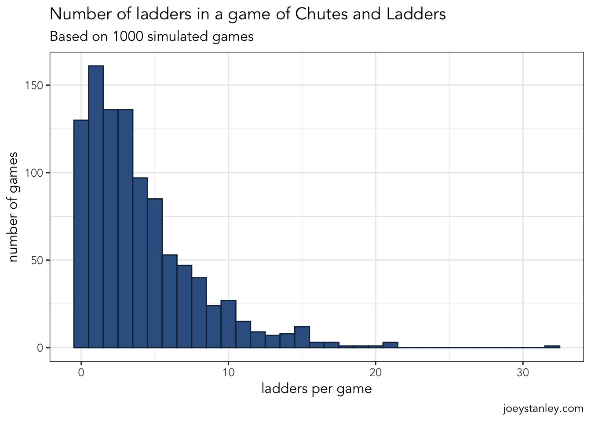
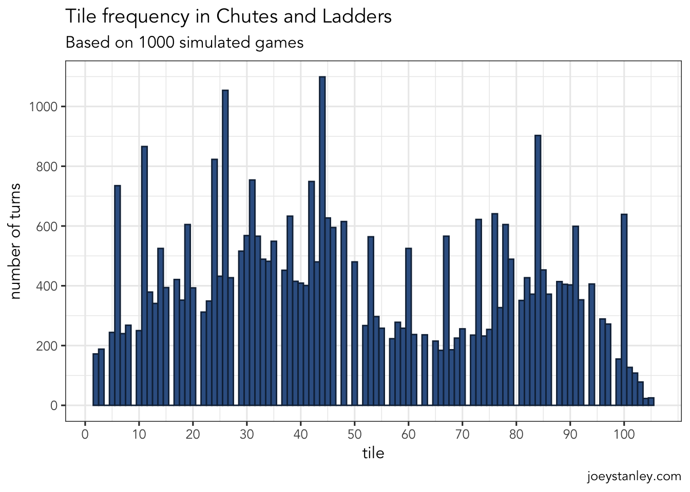
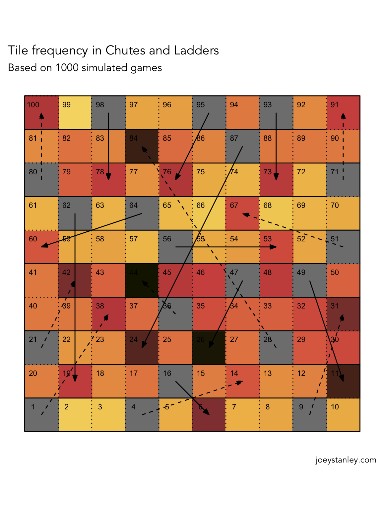
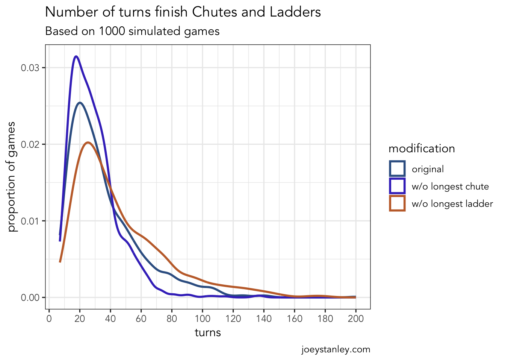

library(tidyverse)
library(ggthemes)
library(scico)
library(readxl)
library(gganimate)We tried teaching our little almost-three-year-old Chutes and Ladders today. She wasn’t very good at counting tiles. But, as I was sitting there climbing up and sliding down over and over, I wondered what the average number of turns it would take to finish the game. So I decided to take a stab at simulating the game. So here’s a post on a simple simulation of Chutes and Ladders that demonstrates absolutely nothing about linguistics and instead shows off some R skills.
I’m trying to increase my Github presence, so the code for this project can be found on my Github.
Note
On October 6, 2023, I updated the code for this post to reflect a few changes in some of the tidyverse functions.
The game
For those of you deprived people who have never played Chutes and Ladders, the game is quite simple. There are 100 tiles arranged in a 10 by 10 board. With 1–3 of your closest friends, you start at Tile 1, roll a die, and advance that number of tiles. Players take turns moving up the board boustrophedonically. until one person reaches 100. The catch is that there are various “chutes” and “ladders” on the board. If you land on the bottom of one of about half a dozen ladders, you climb to the top, advancing anywhere from 10 to 54 tiles. But, if you land at the top of about a dozen chutes, you slide down anywhere from 4 to 63 tiles. There is no skill and it’s 100% luck—perfect for small kids.
I’ll admit that half the reason I wrote this post was so I could use this word!
Here’s a simplified version of the board. First, I’ll read in the data I prepared ahead of time. It just gives the x-y coordinates for each of the 100 tiles.
tile_data <- readxl::read_excel("chutes_ladders_data.xlsx", sheet = 1)
head(tile_data)# A tibble: 6 × 3
tile x y
<dbl> <dbl> <dbl>
1 1 1 1
2 2 2 1
3 3 3 1
4 4 4 1
5 5 5 1
6 6 6 1Now, I’ll read in information about the chutes and ladders themselves, as in where they start and where they stop.
chutes_and_ladders_data <- readxl::read_excel("chutes_ladders_data.xlsx", sheet = 2) %>%
rowid_to_column("id") %>%
gather(position, tile, start, end) %>%
left_join(tile_data, by = "tile")
chutes_and_ladders_data# A tibble: 38 × 6
id type position tile x y
<int> <chr> <chr> <dbl> <dbl> <dbl>
1 1 ladder start 1 1 1
2 2 ladder start 4 4 1
3 3 ladder start 9 9 1
4 4 ladder start 21 1 3
5 5 ladder start 28 8 3
6 6 ladder start 36 5 4
7 7 ladder start 51 10 6
8 8 ladder start 71 10 8
9 9 ladder start 80 1 8
10 10 chute start 16 5 2
# ℹ 28 more rowsJust some information about the lines for the chutes and ladders, mostly for visual purposes.
lines_data <- read_excel("chutes_ladders_data.xlsx", sheet = 3) %>%
rowid_to_column("id") %>%
gather(point, value, beg_x, beg_y, end_x, end_y) %>%
separate(point, into = c("location", "axis")) %>%
spread(axis, value)
head(lines_data)# A tibble: 6 × 5
id type location x y
<int> <chr> <chr> <dbl> <dbl>
1 1 outside beg 0.5 0.5
2 1 outside end 10.5 0.5
3 2 outside beg 0.5 10.5
4 2 outside end 10.5 10.5
5 3 outside beg 0.5 0.5
6 3 outside end 0.5 10.5Now make a basic plot.
ggplot(tile_data, aes(x, y)) +
geom_line(data = lines_data, aes(group = id, linetype = type)) +
geom_text(aes(label = tile), size = 3, nudge_x = -0.25, nudge_y = 0.25) +
labs(title = "A Simplified Chutes and Ladders Board",
caption = "joeystanley.com") +
geom_path(data = chutes_and_ladders_data, aes(group = id, linetype = type),
arrow = arrow(angle = 20, length = unit(0.1, "in"), type = "closed")) +
scale_linetype_manual(values = c("solid", "solid", "dashed", "solid", "dotted", "dotted")) +
coord_fixed(ratio = 1) +
theme_void() +
theme(legend.position = "none")
The game we bought is actually a knock-off (I’m a poor grad student—what do you expect?), but I found an image of the authentic version online so I’ll go with that for this blog post. And for simplicity, I’ll just simulate a one-person game.
The simulation
Simulating the game is relatively straightforward. All you really need is a way to keep track of what tile you’re on, a way to roll the die, and sequence of if-else statements to simulate the chutes and ladders. The die rolling is pretty simple with the help of sample.
sample(6, 1)[1] 1We could wrap that up into a function to make it slightly more transparent too:
roll_die <- function() {
sample(6, 1)
}
roll_die()[1] 4roll_die()[1] 1roll_die()[1] 2Now, in this game, every time you roll a die, you’ll need to advance your token by that many pieces. I could write a separate advance_token function, but with functions this simple, I’ll just combine them into one. This time, it’ll take an argument, spot, which is the current tile number (from 1 to 100) that you’re on. The function takes this spot, rolls a die, and adds that value to it, returning the tile you’ll land on.
roll_die <- function(spot) {
spot + sample(6, 1)
}
roll_die(1)[1] 6roll_die(10)[1] 13roll_die(50)[1] 56roll_die(80)[1] 82Awesome. Now with this, it makes for a pretty uneventful game, so we’ll have to simulate the chutes and ladders. I know base R has switch syntax, but I’ve never been able to get it to work, so I’ll use case_when from the dplyr package to do this. I’ll of course wrap it up in another function verbosely called check_for_chute_or_ladder. Here, I input the start and end points to all the chutes and ladders. So for example, if you land on the very first tile, there’s a ladder that’ll take you to tile 38. If you land on tile 16, you’ll slide down a chute to tile 6. The function will return the new tile you’ll end up on. If you don’t land on any of them, the function will return the same number you sent in.
check_for_chute_or_ladder <- function(spot) {
case_when(
# Ladders (9)
spot == 1 ~ 38,
spot == 4 ~ 14,
spot == 9 ~ 31,
spot == 21 ~ 42,
spot == 28 ~ 84,
spot == 36 ~ 44,
spot == 51 ~ 67,
spot == 71 ~ 91,
spot == 80 ~ 100,
# Chutes (10)
spot == 16 ~ 6,
spot == 47 ~ 26,
spot == 49 ~ 11,
spot == 56 ~ 53,
spot == 62 ~ 19,
spot == 64 ~ 60,
spot == 87 ~ 24,
spot == 93 ~ 73,
spot == 95 ~ 76,
spot == 98 ~ 78,
# No change
TRUE ~ spot)
}
check_for_chute_or_ladder(1)[1] 38check_for_chute_or_ladder(4)[1] 14check_for_chute_or_ladder(5)[1] 5Great. Now we’ve got a full turn. For kicks, I can wrap all this up into yet another function that’ll simulate taking a turn in the game:
take_turn <- function(spot) {
spot %>%
roll_die() %>%
check_for_chute_or_ladder()
}
take_turn(1)[1] 14take_turn(3)[1] 6take_turn(6)[1] 7take_turn(10)[1] 15take_turn(6)[1] 11So as it turns out, these are all the functions I need to simulate an entire game. But, the way it’s set up now, I have to run each turn one at a time, check the output, and run it again. It would be better if I could automate the whole thing and save the results into a dataframe or something.
So I’ve created the larger simulate_game function below. When I run this function, it’ll simulate an entire (1-player) game. First, it’ll create a mostly empty data frame that will be populated as the turns advance. I know that some programming languages are slow if you try to append rows to a dataframe with each iteration of a loop, so I wanted to make sure there was room for a full game before we do anything else. Also, in theory, the game could last forever because of looping chutes and ladders, so I made it large enough to handle a game with 1000 turns—probably way too many for this, but I wanted to make sure. In that dataframe, I have columns for the turn number, what the dice roll was (those are all predetermined), where you landed, whether it has a chute or a ladder, and finally, where you ended up after traveling on that chute or ladder.
I think Perl doesn’t care, and I miss that…I started with 100 turns, but that actually wasn’t enough turns for some of the simulated games!
I’ve never done a simulation in R before, so I don’t know what the protocol is for looping through something an unknown number of times, so I did this whole while(keep_playing) thing. The keep_playing object is initially true, and at the end of each iteration, I check to see if we’ve gotten to 100; if so, I’ll set that to false, which’ll kill the loop. However, I wanted some sort of iterating number (like in a for loop), so I added i myself.
I tried just looping through the
turn_num column, but I couldn’t get the loop to stop after the player hit tile 100.Okay, so then inside that loop, there are several main chunks. Most of it is fluff for handling the data and keeping track of stuff and the actual game portion is just two lines in the middle.
First, if it’s the first iteration of the loop, set the start tile number to 0. Otherwise, set it to wherever we ended up last time.
Then, I add the dice roll to to the start tile to get the (potentially) temporary
landtile. I then send that number off tocheck_for_chute_or_ladderand get the actualendtile.I then do another conditional to tell whether I had a chute or ladder. In theory, I should just be able to tell that with the
check_for_chute_or_ladderfunction, but I’m not sure how to return two values at once in R like I can with Perl.Finally, I’ll do one more conditional to see if we’ve reached tile 100. If not, go on to the next iteration of the loop. If so, we’re done.
After the looping is done, we’ve completed a game. Remember that I started by declaring enough space for 1000 turns. I don’t need all the extra rolls, so just before I return the dataframe with all the game information, filter out the rolls that didn’t happen.
simulate_game <- function(game_num = 0) {
# Declare space for the full game.
n <- 1000
turns <- tibble(turn_num = 1:n,
start = NA,
roll = sample(6, n, replace = TRUE),
land = NA,
chute_or_ladder = NA,
end = NA)
# Loop until the game is over
i <- 1
keep_playing <- TRUE
while(keep_playing) {
# Step 1: Start at zero
if (i == 1) {
turns$start[[i]] <- 0
# Otherwise, start where the last turn ended.
} else {
turns$start[[i]] <- turns$end[[i - 1]]
}
# Step 2: This is where the game actually happens.
# Add dice roll to the start tile
turns$land[[i]] <- turns$start[[i]] + turns$roll[[i]]
# Check for chute or ladder
turns$end[[i]] <- check_for_chute_or_ladder(turns$land[[i]])
# Step 3: Keep track of whether I had a chute or ladder.
if (turns$land[[i]] > turns$end[[i]]) {
turns$chute_or_ladder[[i]] <- "ladder"
} else if (turns$land[[i]] < turns$end[[i]]) {
turns$chute_or_ladder[[i]] <- "chute"
} else {
turns$chute_or_ladder[[i]] <- NA
}
# Step 4: Check if it's game over.
if (turns$end[[i]] >= 100) {
keep_playing <- FALSE
} else {
i <- i + 1
}
}
turns %>%
filter(turn_num <= i) %>%
return()
}Now let’s see it in action!
simulate_game()# A tibble: 21 × 6
turn_num start roll land chute_or_ladder end
<int> <dbl> <int> <dbl> <chr> <dbl>
1 1 0 2 2 <NA> 2
2 2 2 6 8 <NA> 8
3 3 8 6 14 <NA> 14
4 4 14 2 16 ladder 6
5 5 6 1 7 <NA> 7
6 6 7 5 12 <NA> 12
7 7 12 5 17 <NA> 17
8 8 17 1 18 <NA> 18
9 9 18 1 19 <NA> 19
10 10 19 6 25 <NA> 25
# ℹ 11 more rowsHooray! A complete game. This one appears to have been completed in just 15 moves after hitting four chutes and one ladder.
Simulating lots of games
Okay, so I’ve got the code for simulating a game of Chutes and Ladders and in the example above, I finished a game in just 15 moves. Is that average or did I finish a bit sooner than normal?
To answer this question, I’ll just run the simulate_game function a whole bunch of times and then see if I can see some generalizations. I’ll accomplish this with map from the purrr package.
set.seed(201006)
games <- tibble(game_num = 1:1000) %>%
mutate(game = map(game_num, simulate_game)) %>%
unnest(col = game)
games# A tibble: 36,003 × 7
game_num turn_num start roll land chute_or_ladder end
<int> <int> <dbl> <int> <dbl> <chr> <dbl>
1 1 1 0 2 2 <NA> 2
2 1 2 2 3 5 <NA> 5
3 1 3 5 1 6 <NA> 6
4 1 4 6 4 10 <NA> 10
5 1 5 10 4 14 <NA> 14
6 1 6 14 5 19 <NA> 19
7 1 7 19 3 22 <NA> 22
8 1 8 22 1 23 <NA> 23
9 1 9 23 3 26 <NA> 26
10 1 10 26 1 27 <NA> 27
# ℹ 35,993 more rowsThis games object now contains the data for 1000 games of Chutes and Ladders. It’s nothing more than a bunch of outputs from the simulate_game function all combined into one mega dataframe. It’s got about 36K rows in it, so there’s a lot of information. We can now take this and get some summarized information about each of the games. With summarize I have reduced this down into just one row per game, with information about how many turns the game took, as well as how many chutes and ladders I went through.
games_summary <- games %>%
group_by(game_num) %>%
summarize(turns = max(turn_num),
n_chutes = sum(chute_or_ladder == "chute", na.rm = TRUE),
n_ladders = sum(chute_or_ladder == "ladder", na.rm = TRUE))
games_summary# A tibble: 1,000 × 4
game_num turns n_chutes n_ladders
<int> <int> <int> <int>
1 1 114 4 14
2 2 18 2 0
3 3 28 3 2
4 4 16 1 1
5 5 17 4 1
6 6 54 4 5
7 7 23 3 2
8 8 16 2 1
9 9 48 4 5
10 10 52 7 7
# ℹ 990 more rowsLooks like there’s a lot of variation. Game 1 was finished in 68 moves, but Game 2 was done in just 11. Game 4 took a whopping 144 moves! With just plain ol’ summary, I can now just get some information about what an average game was like.
summary(games_summary) game_num turns n_chutes n_ladders
Min. : 1.0 Min. : 7 Min. : 0.00 Min. : 0.000
1st Qu.: 250.8 1st Qu.: 19 1st Qu.: 2.00 1st Qu.: 1.000
Median : 500.5 Median : 29 Median : 3.00 Median : 3.000
Mean : 500.5 Mean : 36 Mean : 3.24 Mean : 4.014
3rd Qu.: 750.2 3rd Qu.: 47 3rd Qu.: 4.00 3rd Qu.: 6.000
Max. :1000.0 Max. :200 Max. :15.00 Max. :32.000 So it appears that it took about 36 turns on average to make it to tile 100. That Game 4 in 16 turns was pretty short—in the top 25%. But now the shortest one took just 7 moves. However, the game theoretically could go on forever, and indeed one game took a whopping 200 turns to finish! I don’t think my two-year-old would appreciate that so much.
Since the data looks a little skewed, let’s visualize that distribution:
ggplot(games_summary, aes(turns)) +
geom_histogram(binwidth = 2, fill = "#376092", color = "#132A45") +
scale_x_continuous(breaks = seq(0, 200, 20), expand = expansion(0, 1)) +
scale_y_continuous(breaks = seq(0, 60, 10), expand = expansion(0, c(0, 1))) +
labs(title = "Number of turns finish Chutes and Ladders",
subtitle = "Based on 1000 simulated games",
caption = "joeystanley.com",
y = "number of games")
So, most of the time, I’ll finish my game in about 15–30 moves. I guess that’s not too bad.
Obviously the most exciting part of the game is getting to travel on some chutes or ladders. How many times did I do that on average? The summary statistics above suggest maybe 3 or 4, but it was also pretty skewed. Let’s look at some visuals.
ggplot(games_summary, aes(n_chutes)) +
geom_histogram(binwidth = 1, fill = "#376092", color = "#132A45") +
labs(title = "Number of chutes in a game of Chutes and Ladders",
subtitle = "Based on 1000 simulated games",
caption = "joeystanley.com",
x = "chutes per game",
y = "number of games")
So it looks like given that there are 10 chutes in this game, I’m probably going to hit about three or four of them. Sometimes it’ll be more though, which would make for an unfortunate game.
ggplot(games_summary, aes(n_ladders)) +
geom_histogram(binwidth = 1, fill = "#376092", color = "#132A45") +
labs(title = "Number of ladders in a game of Chutes and Ladders",
subtitle = "Based on 1000 simulated games",
caption = "joeystanley.com",
x = "ladders per game",
y = "number of games")
Compared to the chutes though the ladders had even more variation. Over 10% of the games didn’t see any of the nine ladders. You’re most likely to hit just one of them, but there were still plenty of games that had as many as 10. I’m not sure why the distribution of chutes and ladders is so different.
So I guess that answered the questions I had. I’m typically going to finish the game in about 20–30 moves, and I’ll have perhaps a half dozen eventful rolls with a chute or a ladder.
Animating a Game
I’m just learning how to use gganimate, and it’s pretty cool, so here’s an animation of the longest game. I was curious as to why the one game took 200 moves to finish!
one_long_game <- games %>%
group_by(game_num) %>%
filter(max(turn_num) == 200) %>%
ungroup() %>%
select(-game_num) %>%
gather(timing, tile, start, land, end) %>%
mutate(timing = factor(timing, levels = c("start", "land", "end"))) %>%
arrange(turn_num, timing) %>%
filter(!(is.na(chute_or_ladder) & timing == "land")) %>%
left_join(tile_data, by = "tile") %>%
rowid_to_column("t")
long_game_animation <- ggplot(tile_data, aes(x, y)) +
geom_line(data = lines_data, aes(group = id, linetype = type), color = "gray33") +
geom_text(aes(label = tile), size = 3, nudge_x = -0.25, nudge_y = 0.25) +
geom_point(data = one_long_game, size = 4) +
geom_path(data = chutes_and_ladders_data, aes(group = id, linetype = type),
arrow = arrow(angle = 20, length = unit(0.1, "in"), type = "closed")) +
scale_linetype_manual(values = c("solid", "solid", "dashed", "solid", "dotted", "dotted")) +
coord_fixed(ratio = 1) +
labs(title = "A 200-turn game of Chutes and Ladders",
subtitle = 'Turn {floor(frame / 10)} of 200',
caption = "joeystanley.com") +
theme_void() +
theme(legend.position = "none") +
transition_time(t) +
ease_aes('cubic-in-out')
animate(long_game_animation, nframe = 2000)
It’s simultaneously entertaining and frustrating to watch.
Most likely tiles
So of course the next question you might want to ask is what tiles are you most likely to land on. Well it’s not going to be an even distribution because of the chutes and ladders throwing you all over the place. Here’s a simple plot that shows how often the simulation ended a turn on a particular tile.
ggplot(games, aes(end)) +
geom_histogram(binwidth = 1, fill = "#376092", color = "#132A45") +
scale_x_continuous(breaks = seq(0, 100, 10)) +
scale_y_continuous(breaks = seq(0, 1000, 200)) +
labs(title = "Tile frequency in Chutes and Ladders",
subtitle = "Based on 1000 simulated games",
caption = "joeystanley.com",
x = "tile",
y = "number of turns")
Now obviously the large spikes are the ends of ladders and chutes, so you’re twice as likely to end up there, either because you took the chute/ladder or because you ended up there by approaching it from a previous tile. But what is interesting to me is the gradual ebb and flow: you’ll spend more time in the 20–50 range and in the 80s, but less time in the 50–70 range. Kinda cool.
Here’s a different way of looking at that data in a way that more closely matches the board.
tile_freq <- games %>%
rename(tile = end) %>%
count(tile) %>%
full_join(tile_data, by = "tile")
ggplot(tile_freq, aes(x, y)) +
geom_point(aes(color = n), shape = "square", size = 18) +
geom_line(data = lines_data, aes(group = id, linetype = type), color = "black", linewidth = 0.5) +
geom_text(aes(label = tile), size = 3, nudge_x = -0.25, nudge_y = 0.25) +
geom_path(data = chutes_and_ladders_data, aes(group = id, linetype = type),
arrow = arrow(angle = 20, length = unit(0.1, "in"), type = "closed")) +
scale_color_scico(name = "turns", palette = "lajolla", direction = -1) +
scale_linetype_manual(values = c("solid", "solid", "dashed", "solid", "dotted", "dotted")) +
coord_fixed(ratio = 1) +
labs(title = "Tile frequency in Chutes and Ladders",
subtitle = "Based on 1000 simulated games",
caption = "joeystanley.com") +
theme(axis.title = element_blank(),
axis.ticks = element_blank(),
axis.text = element_blank(),
panel.grid = element_blank(),
panel.border = element_blank(),
legend.position = "none")
This is a cool plot and I’m glad I figured out how to make it, but because of the boustrophedonic layout, the overall pattern isn’t quite as clear as the histogram above.
There it is again!
Changing the game
Okay so now the last thing I want to do is explore what happens if you change the game up. If I take away a ladder, how does that affect the game? It probably depends on the length, but let’s try taking out the longest ones and see what happens.
To do this, I’ll create a new version of check_for_chute_and_ladder only the longest ladder is commented out. I’ll then rerun the simulation and compare the results.
check_for_chute_or_ladder <- function(spot) {
case_when(
# Ladders (9)
spot == 1 ~ 38,
spot == 4 ~ 14,
spot == 9 ~ 31,
spot == 21 ~ 42,
#spot == 28 ~ 84,
spot == 36 ~ 44,
spot == 51 ~ 67,
spot == 71 ~ 91,
spot == 80 ~ 100,
# Chutes (10)
spot == 16 ~ 6,
spot == 47 ~ 26,
spot == 49 ~ 11,
spot == 56 ~ 53,
spot == 62 ~ 19,
spot == 64 ~ 60,
spot == 87 ~ 24,
spot == 93 ~ 73,
spot == 95 ~ 76,
spot == 98 ~ 78,
# No change
TRUE ~ spot)
}
games_without_longest_ladder <- tibble(game_num = 1:1000) %>%
mutate(game = map(game_num, simulate_game)) %>%
unnest(cols = game)Now I’ll do the same thing without the longest chute.
check_for_chute_or_ladder <- function(spot) {
case_when(
# Ladders (9)
spot == 1 ~ 38,
spot == 4 ~ 14,
spot == 9 ~ 31,
spot == 21 ~ 42,
spot == 28 ~ 84,
spot == 36 ~ 44,
spot == 51 ~ 67,
spot == 71 ~ 91,
spot == 80 ~ 100,
# Chutes (10)
spot == 16 ~ 6,
spot == 47 ~ 26,
spot == 49 ~ 11,
spot == 56 ~ 53,
spot == 62 ~ 19,
spot == 64 ~ 60,
#spot == 87 ~ 24,
spot == 93 ~ 73,
spot == 95 ~ 76,
spot == 98 ~ 78,
# No change
TRUE ~ spot)
}
games_without_longest_chute <- tibble(game_num = 1:1000) %>%
mutate(game = map(game_num, simulate_game)) %>%
unnest(cols = game)Now I’ll combine all this game data.
modified_games <- bind_rows(list(original = games,
`w/o longest ladder` = games_without_longest_ladder,
`w/o longest chute` = games_without_longest_chute),
.id = "modification") %>%
group_by(modification, game_num) %>%
summarize(turns = max(turn_num),
n_chutes = sum(chute_or_ladder == "chute", na.rm = TRUE),
n_ladders = sum(chute_or_ladder == "ladder", na.rm = TRUE),
.groups = "drop_last")
modified_games# A tibble: 3,000 × 5
# Groups: modification [3]
modification game_num turns n_chutes n_ladders
<chr> <int> <int> <int> <int>
1 original 1 114 4 14
2 original 2 18 2 0
3 original 3 28 3 2
4 original 4 16 1 1
5 original 5 17 4 1
6 original 6 54 4 5
7 original 7 23 3 2
8 original 8 16 2 1
9 original 9 48 4 5
10 original 10 52 7 7
# ℹ 2,990 more rowsAnd now I’ll plot their distributions all overlaid on top of each other.
ggplot(modified_games, aes(turns, color = modification)) +
geom_density(linewidth = 1) +
scale_x_continuous(breaks = seq(0, 500, 20)) +
labs(title = "Number of turns finish Chutes and Ladders",
subtitle = "Based on 1000 simulated games",
caption = "joeystanley.com",
y = "proportion of games") +
scale_color_manual(values = c("#376092", "#4237C4", "#C46D37"))
So, not surprisingly, if you ignore the longest chute, the games tend to be a little shorter. More games were finished in less than 40 moves and far fewer games took more than about 50 to get finished. And it turns out if you remove the longest ladder, the games are less likely to be shorter and more likely to be longer.
The End
So that’s it. Thanks for joining me on my journey of simulating Chutes and Ladders!